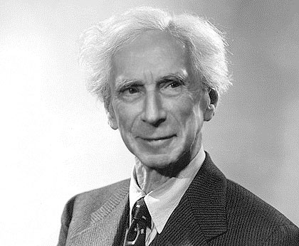
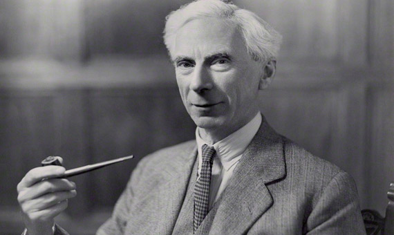

Bertrand Arthur William Russell (Trellech, Monmouthshire; 18 de mayo de 1872-Penrhyndeudraeth, Gwynedd, 2 de febrero de 1970) fue un filósofo, matemático, lógico y escritor británico, ganador del Premio Nobel de Literatura. Tercer conde de Russell, pertenecía a una de las familias aristocráticas más prominentes del Reino Unido. Era hijo del vizconde de Amberley, John Russell, y ahijado del filósofo utilitarista John Stuart Mill, cuyos escritos tuvieron una gran influencia en su vida. Contrajo matrimonio cuatro veces y tuvo tres hijos.
A principios del siglo XX, Russell encabezó la «revuelta contra el idealismo» británica.Es conocido por su influencia en la filosofía analítica junto con Gottlob Frege, su compañero G. E. Moore y su alumno Ludwig Wittgenstein y A. N. Whitehead, coautor de su obra Principia Mathematica.Apoyó la idea de una filosofía científica y propuso aplicar el análisis lógico a problemas tradicionales, como el problema mente-cuerpo o la existencia del mundo físico. Su ensayo filosófico Sobre la denotación ha sido considerado un «paradigma de la filosofía».Su trabajo ha tenido una influencia considerable en matemática, lógica, teoría de conjuntos, inteligencia artificial, ciencia cognitiva, informática, filosofía del lenguaje, epistemología, metafísica, ética y política.
Russell fue un destacado activista social pacifista contra la guerra y defendió el antiimperialismo.A lo largo de su vida, Russell se consideraba a sí mismo liberal y socialista, aunque a veces también sugirió que su escéptica le había llevado a sentir que «nunca había sido ninguna de estas cosas, en un sentido profundo».Estuvo en prisión por su pacifismo durante la Primera Guerra Mundial.Más tarde, llegó a la conclusión de que la Segunda Guerra Mundial contra Hitler fue un mal menor necesario y también criticó el totalitarismo estalinista, condenó la participación de Estados Unidos en la guerra de Vietnam y fue un abierto defensor del desarme nuclear.En 1950, Russell recibió el Premio Nobel de Literatura «en reconocimiento a sus variados y significativos escritos en los que defiende los ideales humanitarios y la libertad de pensamiento».

